<title>os!strike</title>
<meta name="description" content="osu! on a giant curved screen floating in space, played in first person with a Counter-Strike crosshair and guns. Free download for Windows.">
<link rel="preconnect" href="https://fonts.googleapis.com">
<link rel="preconnect" href="https://fonts.gstatic.com" crossorigin>
<link rel="stylesheet" href="https://fonts.googleapis.com/css2?family=Barlow+Condensed:ital,wght@0,500;0,600;0,700;0,800;1,800&family=Barlow:wght@400;500;600&family=IBM+Plex+Mono:wght@400;500&display=swap">
<style>
/* Layout: a starfield page; one giant curved screen (the playable demo) as the hero,
   then screenshots and guides on the same space background, framed like the in-game screen. */
:root {
  --void: #06070c;
  --deep: #0b0d16;
  --panel: #10131d;
  --line: rgba(226, 231, 255, 0.09);
  --line-strong: rgba(226, 231, 255, 0.18);
  --text: #ecebe6;
  --dim: #a4a7b6;
  --faint: #6c7083;
  --orange: #ff9e1c;
  --orange-hot: #ffc35a;
  --ct: #6b9ef2;
  --green: #4dff73;
  --red: #ff4e6f;
  --spectrum: linear-gradient(90deg, #6f8fb3 0%, #4fc0ff 15%, #4fffd5 25%, #7cff4f 31%, #f6f05c 41%, #ff8068 52%, #ff4e6f 61%, #c645b8 72%, #6563de 84%, #3f3bcf 96%);
  --display: "Barlow Condensed", "Bahnschrift", "Arial Narrow", sans-serif;
  --body: "Barlow", "Segoe UI", system-ui, sans-serif;
  --mono: "IBM Plex Mono", Consolas, ui-monospace, monospace;
  --gutter: max(16px, 4vw);
  --radius: 10px;
  color-scheme: dark;
}

* { box-sizing: border-box; }
[hidden] { display: none !important; }
html { scroll-behavior: smooth; scroll-padding-top: 84px; }
body {
  background: var(--void);
  color: var(--text);
  font-family: var(--body);
  font-size: 17px;
  line-height: 1.6;
  overflow-x: hidden;
}
body::before {
  content: "";
  position: fixed;
  inset: 0;
  z-index: -1;
  background:
    radial-gradient(60% 45% at 85% 10%, rgba(101, 99, 222, 0.16), transparent 70%),
    radial-gradient(50% 40% at 10% 35%, rgba(198, 69, 184, 0.10), transparent 70%),
    radial-gradient(70% 50% at 50% 100%, rgba(79, 192, 255, 0.07), transparent 70%),
    var(--void);
}
a { color: inherit; }
img { display: block; max-width: 100%; }
:focus-visible { outline: 2px solid var(--orange); outline-offset: 3px; border-radius: 4px; }
.wrap { width: 100%; max-width: 1240px; margin-inline: auto; padding-inline: var(--gutter); }

/* ---------- Header ---------- */
.site-header {
  position: sticky;
  top: env(safe-area-inset-top, 0px);
  z-index: 50;
  background: rgba(6, 7, 12, 0.72);
  backdrop-filter: blur(14px) saturate(140%);
  -webkit-backdrop-filter: blur(14px) saturate(140%);
  border-bottom: 1px solid var(--line);
}
.site-header .wrap { display: flex; align-items: center; gap: 24px; min-height: 68px; }
.brand { display: flex; align-items: center; gap: 10px; text-decoration: none; flex-shrink: 0; white-space: nowrap; }
.brand svg { width: 34px; height: 34px; flex-shrink: 0; }
.brand b { font-family: var(--display); font-weight: 800; font-size: 26px; letter-spacing: 0.01em; line-height: 1; }
.brand b span, .wordmark span { color: var(--orange); }
.nav { display: flex; align-items: center; gap: 4px; margin-right: auto; min-width: 0; overflow-x: auto; scrollbar-width: none; }
.nav::-webkit-scrollbar { display: none; }
.nav a {
  flex-shrink: 0;
  white-space: nowrap;
  padding: 8px 12px;
  border-radius: 6px;
  font-family: var(--display);
  font-weight: 600;
  font-size: 17px;
  line-height: 1;
  text-transform: uppercase;
  letter-spacing: 0.05em;
  text-decoration: none;
  color: var(--dim);
  transition: color 0.15s, background 0.15s;
}
.nav a:hover { color: var(--text); background: rgba(255, 255, 255, 0.06); }
.header-dl {
  display: inline-flex;
  align-items: center;
  gap: 10px;
  padding: 9px 18px 9px 14px;
  border-radius: 8px;
  background: var(--orange);
  color: #1a1004;
  text-decoration: none;
  font-family: var(--display);
  font-weight: 800;
  font-size: 18px;
  letter-spacing: 0.04em;
  text-transform: uppercase;
  box-shadow: 0 0 0 1px rgba(255, 195, 90, 0.5), 0 6px 26px rgba(255, 158, 28, 0.35);
  transition: transform 0.15s, box-shadow 0.15s;
  white-space: nowrap;
}
.header-dl:hover { transform: translateY(-1px); box-shadow: 0 0 0 1px var(--orange-hot), 0 10px 34px rgba(255, 158, 28, 0.5); }
.header-dl small { font-family: var(--mono); font-weight: 500; font-size: 12px; letter-spacing: 0; opacity: 0.75; text-transform: none; }
.dl-icon { width: 18px; height: 18px; flex-shrink: 0; }

/* ---------- Hero ---------- */
.hero { padding-block: 56px 32px; }
.hero-top { display: grid; grid-template-columns: minmax(0, 1.25fr) minmax(0, 1fr); gap: 48px; align-items: end; }
.eyebrow {
  font-family: var(--mono);
  font-size: 13px;
  letter-spacing: 0.08em;
  text-transform: uppercase;
  color: var(--orange);
  margin: 0 0 14px;
}
.wordmark {
  font-family: var(--display);
  font-weight: 800;
  font-style: italic;
  font-size: clamp(76px, 13vw, 168px);
  line-height: 0.82;
  letter-spacing: -0.02em;
  margin: 0;
  text-shadow: 0 0 60px rgba(255, 158, 28, 0.18);
}
.lede { font-size: clamp(18px, 1.9vw, 21px); color: var(--dim); max-width: 34em; margin: 22px 0 28px; text-wrap: pretty; }
.lede strong { color: var(--text); font-weight: 600; }
.cta-row { display: flex; flex-wrap: wrap; gap: 14px; align-items: center; }
.btn-dl {
  display: inline-flex;
  align-items: center;
  gap: 14px;
  padding: 14px 24px 14px 20px;
  border-radius: 10px;
  background: var(--orange);
  color: #1a1004;
  text-decoration: none;
  box-shadow: 0 0 0 1px rgba(255, 195, 90, 0.6), 0 10px 40px rgba(255, 158, 28, 0.38);
  transition: transform 0.15s, box-shadow 0.15s;
}
.btn-dl:hover { transform: translateY(-2px); box-shadow: 0 0 0 1px var(--orange-hot), 0 16px 50px rgba(255, 158, 28, 0.55); }
.btn-dl .dl-icon { width: 26px; height: 26px; }
.btn-dl span { display: grid; line-height: 1.1; }
.btn-dl b { font-family: var(--display); font-weight: 800; font-size: 24px; letter-spacing: 0.03em; text-transform: uppercase; }
.btn-dl small { font-family: var(--mono); font-size: 12.5px; opacity: 0.75; }
.btn-ghost {
  display: inline-flex;
  align-items: center;
  gap: 8px;
  padding: 14px 18px;
  border-radius: 10px;
  border: 1px solid var(--line-strong);
  text-decoration: none;
  font-family: var(--display);
  font-weight: 700;
  font-size: 19px;
  letter-spacing: 0.04em;
  text-transform: uppercase;
  color: var(--text);
  transition: border-color 0.15s, background 0.15s;
}
.btn-ghost:hover { border-color: var(--orange); background: rgba(255, 158, 28, 0.06); }

.facts { display: grid; grid-template-columns: repeat(2, minmax(0, 1fr)); gap: 1px; background: var(--line); border: 1px solid var(--line); border-radius: var(--radius); overflow: hidden; margin: 0; }
.facts div { background: rgba(11, 13, 22, 0.85); padding: 16px 18px; }
.facts dt { font-family: var(--display); font-weight: 800; font-size: 40px; line-height: 1; font-variant-numeric: tabular-nums; }
.facts dd { margin: 6px 0 0; color: var(--dim); font-size: 14.5px; line-height: 1.35; }

/* Hero screenshot, framed with the glowing orange edges of the in-game screen */
.hero-shot {
  margin: 44px 0 0;
  border-radius: 14px;
  overflow: hidden;
  border: 1px solid rgba(255, 177, 61, 0.35);
  box-shadow: 0 0 0 1px rgba(255, 158, 28, 0.15), 0 0 60px rgba(255, 158, 28, 0.18), 0 30px 80px rgba(0, 0, 0, 0.6);
}
.hero-shot img { width: 100%; aspect-ratio: 16 / 9; object-fit: cover; }
.stage-caption { text-align: center; font-family: var(--mono); font-size: 13px; color: var(--faint); margin: 10px 0 0; }
.stage-caption kbd { font-family: var(--mono); color: var(--dim); border: 1px solid var(--line-strong); border-radius: 4px; padding: 0 5px; }

/* ---------- Sections ---------- */
section.block { padding-block: 88px 24px; }
.section-head { display: grid; gap: 10px; margin-bottom: 36px; max-width: 760px; }
.kicker { font-family: var(--mono); font-size: 13px; letter-spacing: 0.08em; text-transform: uppercase; color: var(--orange); margin: 0; }
h2 {
  font-family: var(--display);
  font-weight: 800;
  font-size: clamp(40px, 5.6vw, 68px);
  line-height: 0.95;
  letter-spacing: -0.005em;
  text-transform: uppercase;
  margin: 0;
  text-wrap: balance;
}
h3 { font-family: var(--display); font-weight: 700; font-size: 26px; line-height: 1.1; letter-spacing: 0.01em; margin: 0; text-wrap: balance; }
.section-head p { color: var(--dim); margin: 6px 0 0; max-width: 62ch; }
.spectrum-rule { height: 3px; border-radius: 3px; background: var(--spectrum); opacity: 0.85; }

/* Screens framed like the in-game curved screen (glowing top and bottom arcs) */
.shot {
  position: relative;
  margin: 0;
  border-radius: var(--radius);
  overflow: hidden;
  background: var(--deep);
  border: 1px solid var(--line);
}
.shot img { width: 100%; height: 100%; object-fit: cover; aspect-ratio: 16 / 9; }
.shot figcaption {
  position: absolute;
  left: 0;
  right: 0;
  bottom: 0;
  padding: 36px 18px 14px;
  background: linear-gradient(transparent, rgba(4, 5, 9, 0.88));
  display: grid;
  gap: 2px;
}
.shot figcaption b { font-family: var(--display); font-weight: 700; font-size: 22px; letter-spacing: 0.02em; }
.shot figcaption span { color: var(--dim); font-size: 14.5px; line-height: 1.4; }
.gallery { display: grid; grid-template-columns: repeat(3, minmax(0, 1fr)); gap: 14px; }
.gallery .wide { grid-column: span 2; grid-row: span 2; }
.gallery .wide img { aspect-ratio: auto; height: 100%; }

/* Fail sequence: a real timeline, so it gets timecodes */
.failstrip { display: grid; grid-template-columns: repeat(4, minmax(0, 1fr)); gap: 10px; margin-top: 18px; }
.failstrip figure { margin: 0; display: grid; gap: 8px; }
.failstrip img { border-radius: 8px; border: 1px solid var(--line); aspect-ratio: 16 / 9; object-fit: cover; width: 100%; }
.failstrip figcaption { font-family: var(--mono); font-size: 12.5px; color: var(--faint); }
.failstrip figcaption b { color: var(--red); font-weight: 500; margin-right: 6px; }

/* Features */
.features { display: grid; grid-template-columns: repeat(3, minmax(0, 1fr)); gap: 40px 36px; }
.feature { display: grid; gap: 10px; align-content: start; min-width: 0; }
.feature p { color: var(--dim); margin: 0; font-size: 16px; }
.feature .num { font-family: var(--mono); font-size: 13px; color: var(--orange); }
.mods { display: flex; flex-wrap: wrap; gap: 8px; margin-top: 4px; }
.mod {
  display: inline-grid;
  grid-template-columns: auto auto;
  align-items: baseline;
  gap: 7px;
  padding: 5px 10px 5px 8px;
  border-radius: 6px;
  background: var(--panel);
  border: 1px solid var(--line);
  font-size: 14px;
  color: var(--dim);
}
.mod b { font-family: var(--display); font-weight: 800; font-size: 17px; color: var(--text); letter-spacing: 0.04em; }
.mod.hard b { color: #ff8068; }
.mod.easy b { color: #7cff4f; }
.mod.auto b { color: var(--ct); }

.spectrum-card { grid-column: 1 / -1; display: grid; gap: 14px; padding: 26px 28px 30px; border-radius: var(--radius); background: var(--panel); border: 1px solid var(--line); }
.spectrum-card p { color: var(--dim); margin: 0; max-width: 70ch; }
.spec { position: relative; margin-top: 30px; }
.spec-bar { height: 10px; border-radius: 10px; background: var(--spectrum); box-shadow: 0 0 24px rgba(255, 128, 104, 0.25); }
.spec-tiers { position: relative; height: 54px; margin-top: 10px; }
.tier { position: absolute; top: 0; transform: translateX(-1px); display: grid; gap: 2px; padding-left: 8px; border-left: 1px solid var(--line-strong); }
.tier b { font-family: var(--display); font-weight: 800; font-size: 16px; letter-spacing: 0.08em; }
.tier span { font-family: var(--mono); font-size: 12px; color: var(--faint); }
.spec-scale { position: absolute; top: -26px; left: 0; right: 0; display: flex; justify-content: space-between; font-family: var(--mono); font-size: 12px; color: var(--faint); font-variant-numeric: tabular-nums; }

/* Weapons */
.weapons { display: grid; grid-template-columns: repeat(3, minmax(0, 1fr)); gap: 16px; }
.weapon { display: grid; grid-template-rows: auto 1fr; border-radius: var(--radius); overflow: hidden; background: var(--panel); border: 1px solid var(--line); }
.weapon .pic { position: relative; aspect-ratio: 4 / 3; overflow: hidden; }
.weapon .pic img { width: 100%; height: 100%; object-fit: cover; object-position: 78% 85%; transform: scale(1.35); transform-origin: 78% 85%; transition: transform 0.4s; }
.weapon:hover .pic img { transform: scale(1.45); }
.key {
  position: absolute;
  top: 12px;
  left: 12px;
  min-width: 34px;
  height: 34px;
  display: grid;
  place-items: center;
  border-radius: 6px;
  background: rgba(6, 7, 12, 0.8);
  border: 1px solid var(--line-strong);
  border-bottom-width: 3px;
  font-family: var(--mono);
  font-weight: 500;
  font-size: 16px;
}
.weapon .body { padding: 18px 20px 22px; display: grid; gap: 8px; align-content: start; }
.weapon dl { display: grid; grid-template-columns: auto 1fr; gap: 4px 14px; margin: 4px 0 0; font-size: 14.5px; }
.weapon dt { font-family: var(--mono); font-size: 12.5px; color: var(--faint); text-transform: uppercase; letter-spacing: 0.05em; padding-top: 2px; }
.weapon dd { margin: 0; color: var(--dim); }
.note { color: var(--faint); font-size: 15px; margin: 18px 0 0; }

/* Guides */
.guide { display: grid; grid-template-columns: minmax(0, 1fr) minmax(0, 1fr); gap: 40px; align-items: start; }
.steps { list-style: none; margin: 0; padding: 0; display: grid; gap: 26px; counter-reset: step; }
.steps > li { display: grid; grid-template-columns: 44px minmax(0, 1fr); gap: 16px; counter-increment: step; }
.steps > li > div { min-width: 0; }
.steps > li::before {
  content: counter(step);
  width: 44px;
  height: 44px;
  display: grid;
  place-items: center;
  border-radius: 50%;
  border: 3px solid var(--orange);
  box-shadow: 0 0 0 4px rgba(255, 158, 28, 0.12), inset 0 0 12px rgba(255, 158, 28, 0.25);
  font-family: var(--display);
  font-weight: 800;
  font-size: 22px;
  color: var(--text);
}
.steps h3 { font-size: 23px; margin-top: 8px; }
.steps p { margin: 6px 0 0; color: var(--dim); }
.steps ul { margin: 8px 0 0; padding-left: 20px; color: var(--dim); display: grid; gap: 8px; list-style: disc; }
.steps ul li { display: list-item; padding-left: 2px; }
.steps ul li::marker { color: var(--orange); }
code, .path {
  font-family: var(--mono);
  font-size: 0.86em;
  background: rgba(255, 255, 255, 0.06);
  border: 1px solid var(--line);
  border-radius: 5px;
  padding: 1px 6px;
  color: var(--text);
  overflow-wrap: anywhere;
}
.tree {
  margin: 0;
  padding: 22px 24px;
  border-radius: var(--radius);
  background: #090b12;
  border: 1px solid var(--line);
  font-family: var(--mono);
  font-size: 14px;
  line-height: 1.75;
  color: var(--dim);
  overflow-x: auto;
  white-space: pre;
}
.tree .d { color: var(--text); }
.tree .x { color: var(--orange); }
.tree .c { color: var(--faint); }
.tree .n { color: var(--green); }
.side { display: grid; gap: 16px; min-width: 0; }
.callout { padding: 16px 18px; border-radius: var(--radius); border: 1px dashed var(--line-strong); color: var(--dim); font-size: 15.5px; }
.callout b { color: var(--text); }

/* Skin comparison slider */
.compare { position: relative; border-radius: var(--radius); overflow: hidden; border: 1px solid var(--line); aspect-ratio: 16 / 9; background: var(--deep); user-select: none; }
.compare img { position: absolute; inset: 0; width: 100%; height: 100%; object-fit: cover; }
.compare .top { clip-path: inset(0 calc(100% - var(--split, 50%)) 0 0); }
.compare .divider { position: absolute; top: 0; bottom: 0; left: var(--split, 50%); width: 2px; background: var(--orange); box-shadow: 0 0 14px var(--orange); transform: translateX(-1px); pointer-events: none; }
.compare .divider::after {
  content: "";
  position: absolute;
  top: 50%;
  left: 50%;
  width: 38px;
  height: 38px;
  transform: translate(-50%, -50%);
  border-radius: 50%;
  border: 3px solid var(--orange);
  background: rgba(6, 7, 12, 0.85);
}
.compare input { position: absolute; inset: 0; width: 100%; height: 100%; opacity: 0; cursor: ew-resize; margin: 0; }
.compare .tag { position: absolute; top: 12px; font-family: var(--mono); font-size: 12.5px; padding: 4px 10px; border-radius: 999px; background: rgba(6, 7, 12, 0.78); border: 1px solid var(--line-strong); pointer-events: none; }
.compare .tag.l { left: 12px; }
.compare .tag.r { right: 12px; }

/* Keycaps used in the text */
kbd.k {
  min-width: 32px;
  height: 32px;
  padding: 0 9px;
  display: inline-grid;
  place-items: center;
  border-radius: 6px;
  background: var(--panel);
  border: 1px solid var(--line-strong);
  border-bottom-width: 3px;
  font-family: var(--mono);
  font-size: 13.5px;
  color: var(--text);
}

/* FAQ */
.faq-wrap > div { max-width: 900px; }
.faq { display: grid; gap: 10px; }
.faq details { border-radius: var(--radius); background: var(--panel); border: 1px solid var(--line); }
.faq summary {
  list-style: none;
  cursor: pointer;
  padding: 16px 48px 16px 18px;
  font-family: var(--display);
  font-weight: 700;
  font-size: 21px;
  letter-spacing: 0.01em;
  position: relative;
}
.faq summary::-webkit-details-marker { display: none; }
.faq summary::after { content: "+"; position: absolute; right: 18px; top: 50%; transform: translateY(-50%); font-family: var(--mono); font-size: 20px; color: var(--orange); }
.faq details[open] summary::after { content: "–"; }
.faq details > div { padding: 0 18px 18px; color: var(--dim); }
.faq details > div p { margin: 0 0 8px; }

/* Final download */
.final { margin-top: 96px; padding-block: 72px; border-block: 1px solid var(--line); background: radial-gradient(60% 120% at 50% 0%, rgba(255, 158, 28, 0.12), transparent 70%); }
.final .wrap { display: grid; justify-items: center; text-align: center; gap: 18px; }
.final h2 { font-size: clamp(44px, 7vw, 92px); }
.final p { color: var(--dim); margin: 0; max-width: 60ch; }
.hash { display: flex; flex-wrap: wrap; justify-content: center; align-items: center; gap: 8px; font-family: var(--mono); font-size: 12.5px; color: var(--faint); max-width: 100%; }
.hash code { font-size: 12px; color: var(--dim); }
.pending { font-family: var(--mono); font-size: 13px; color: var(--orange-hot); }

footer { padding-block: 40px 56px; color: var(--faint); font-size: 14px; }
footer .wrap { display: flex; flex-wrap: wrap; gap: 14px 40px; justify-content: space-between; }
footer p { margin: 0; max-width: 70ch; }

/* ---------- Responsive ---------- */
@media (max-width: 1000px) {
  html { scroll-padding-top: 120px; }
  .hero-top, .guide { grid-template-columns: minmax(0, 1fr); }
  .features { grid-template-columns: repeat(2, minmax(0, 1fr)); }
  .gallery { grid-template-columns: repeat(2, minmax(0, 1fr)); }
  .gallery .wide { grid-column: 1 / -1; grid-row: auto; }
  .gallery .wide img { aspect-ratio: 16 / 9; }
  .site-header .wrap { flex-wrap: wrap; row-gap: 0; padding-block: 8px; }
  .nav { order: 3; flex-basis: 100%; margin-right: 0; padding-bottom: 4px; }
  .header-dl { margin-left: auto; }
  .nav a { font-size: 15px; padding: 6px 10px; }
}
@media (max-width: 640px) {
  body { font-size: 16px; }
  .features, .weapons, .gallery { grid-template-columns: minmax(0, 1fr); }
  .failstrip { grid-template-columns: repeat(2, minmax(0, 1fr)); }
  .header-dl small { display: none; }
  .brand b { font-size: 22px; }
  .tier span { display: none; }
  .tier:nth-child(even) { top: 24px; }
  .spec-tiers { height: 50px; }
  section.block { padding-block: 64px 16px; }
}
@media (prefers-reduced-motion: reduce) {
  html { scroll-behavior: auto; }
  .btn-dl, .header-dl, .weapon .pic img { transition: none; }
}
</style>

<svg width="0" height="0" style="position:absolute" aria-hidden="true">
  <defs>
    <symbol id="i-dl" viewBox="0 0 24 24"><path d="M12 3v12m0 0-5-5m5 5 5-5M4 19h16" fill="none" stroke="currentColor" stroke-width="2.4" stroke-linecap="round" stroke-linejoin="round"/></symbol>
  </defs>
</svg>

<header class="site-header">
  <div class="wrap">
    <a class="brand" href="#top" aria-label="os!strike home">
      <svg viewBox="0 0 512 512" aria-hidden="true">
        <defs><linearGradient id="lg-ring" x1="0" y1="0" x2="1" y2="1"><stop offset="0" stop-color="#ffc35a"/><stop offset="1" stop-color="#ff7a1a"/></linearGradient></defs>
        <rect width="512" height="512" rx="112" fill="#11141c"/>
        <circle cx="256" cy="256" r="150" fill="none" stroke="url(#lg-ring)" stroke-width="40"/>
        <circle cx="256" cy="256" r="180" fill="none" stroke="#fff" stroke-width="18"/>
        <g fill="#fff"><rect x="246" y="140" width="20" height="70" rx="4"/><rect x="246" y="302" width="20" height="70" rx="4"/><rect x="140" y="246" width="70" height="20" rx="4"/><rect x="302" y="246" width="70" height="20" rx="4"/></g>
        <rect x="244" y="220" width="24" height="44" rx="6" fill="#ff9e1c"/><circle cx="256" cy="286" r="12" fill="#ff9e1c"/>
      </svg>
      <b>os<span>!</span>strike</b>
    </a>
    <nav class="nav" aria-label="Sections">
      <a href="#maps">Install maps</a>
      <a href="#skins">Install skins</a>
      <a href="#weapons">Weapons</a>
      <a href="#faq">FAQ</a>
    </nav>
    <a class="header-dl" data-download href="#download">
      <svg class="dl-icon" aria-hidden="true"><use href="#i-dl"/></svg>
      Download <small>196 MB</small>
    </a>
  </div>
</header>

<main id="top">
  <section class="hero">
    <div class="wrap hero-top">
      <div>
        <p class="eyebrow">Free fan game · Windows 10/11 · v1.0</p>
        <h1 class="wordmark">os<span>!</span>strike</h1>
        <p class="lede">osu! on a <strong>giant curved screen floating in space</strong>, played in first person. You aim with a Counter-Strike crosshair and every circle is a shot on the beat, with a Desert Eagle if you like.</p>
        <div class="cta-row">
          <a class="btn-dl" data-download href="#download">
            <svg class="dl-icon" aria-hidden="true"><use href="#i-dl"/></svg>
            <span><b>Download for Windows</b><small>v1.0 · 196 MB · .zip</small></span>
          </a>
          <a class="btn-ghost" href="#maps">Add maps &amp; skins →</a>
        </div>
      </div>
      <dl class="facts">
        <div><dt>15</dt><dd>songs included, with 132 difficulties ready to play</dd></div>
        <div><dt>11</dt><dd>osu! mods, from Easy to Flashlight and Auto</dd></div>
        <div><dt>3</dt><dd>guns with CS hands: AK-47, USP-S, Desert Eagle</dd></div>
        <div><dt>.osz</dt><dd>real osu! beatmaps and .osk skins, just drop them in</dd></div>
      </dl>
    </div>

    <div class="wrap">
      <figure class="hero-shot">
        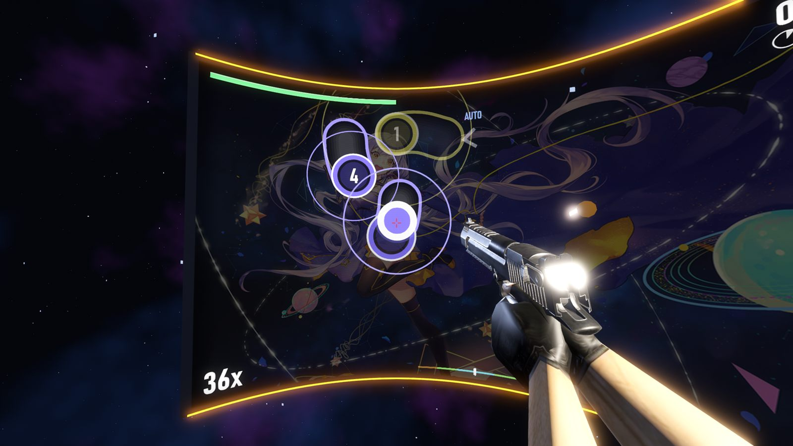
      </figure>
      <p class="stage-caption">quaver [Shunao's Hard] · 3.7★ · Desert Eagle · captured in-game at 1920×1080</p>
    </div>
  </section>

  <section class="block" id="screens">
    <div class="wrap">
      <div class="section-head">
        <p class="kicker">Screenshots</p>
        <h2>Straight from the game</h2>
        <p>Every picture here is a frame captured from os!strike v1.0 at 1920×1080 on the Ultra preset.</p>
      </div>
      <div class="gallery">
        <figure class="shot wide">
          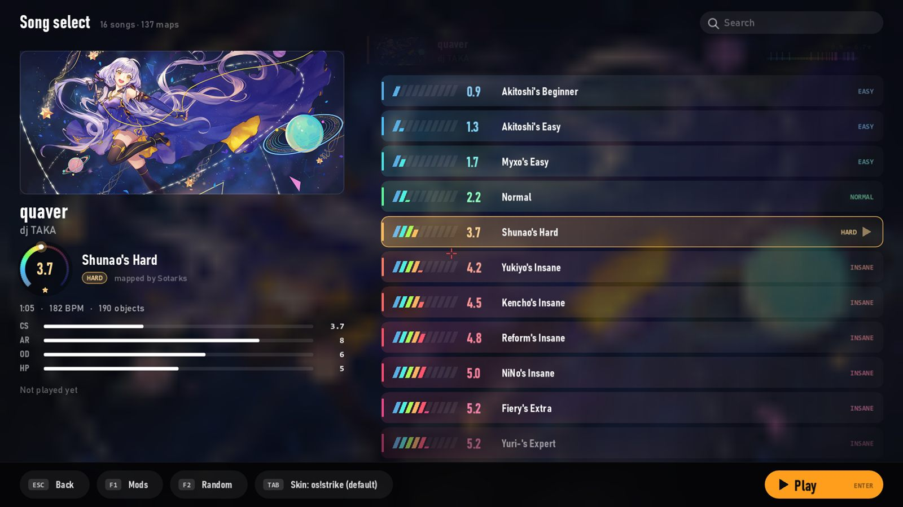
          <figcaption><b>Song select</b><span>Every difficulty gets its colour on the star spectrum</span></figcaption>
        </figure>
        <figure class="shot">
          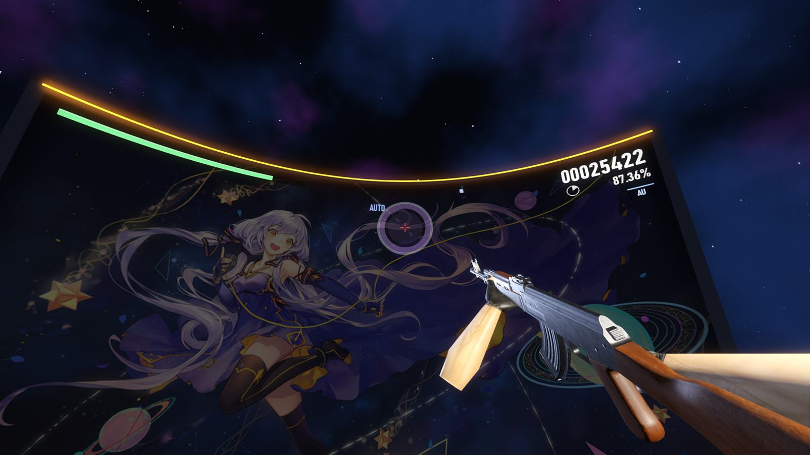
          <figcaption><b>Shoot to the beat</b><span>Every circle is one shot</span></figcaption>
        </figure>
        <figure class="shot">
          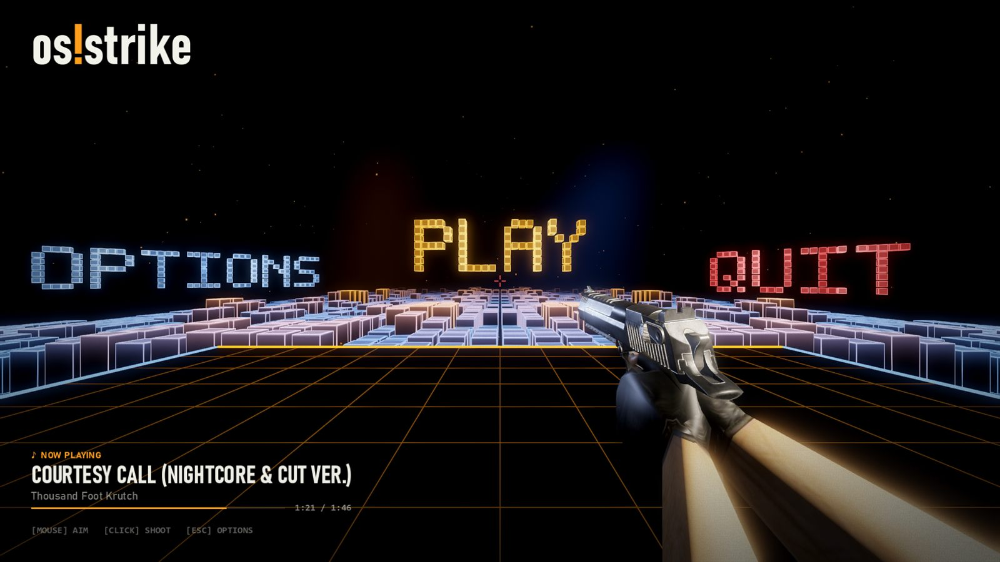
          <figcaption><b>The lobby</b><span>Shoot PLAY, OPTIONS or QUIT to pick</span></figcaption>
        </figure>
        <figure class="shot">
          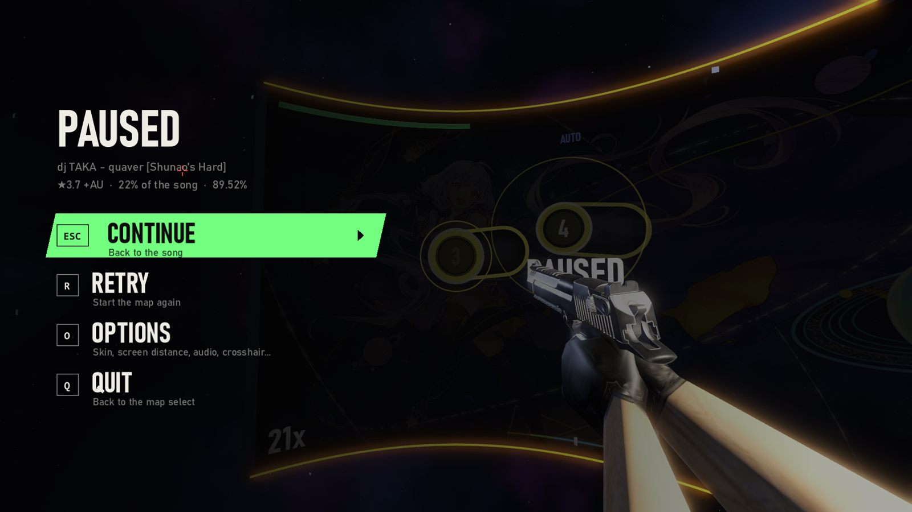
          <figcaption><b>Pause menu</b><span>Continue, retry or tweak options mid-song</span></figcaption>
        </figure>
        <figure class="shot">
          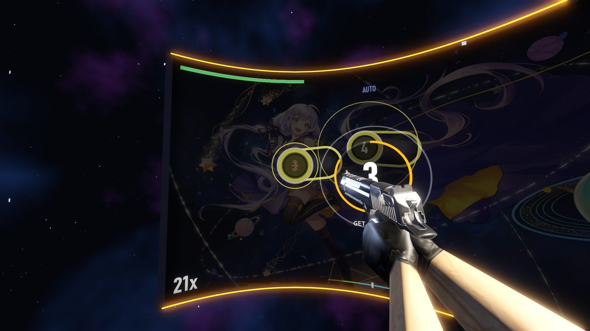
          <figcaption><b>3, 2, 1</b><span>A countdown gives you time to aim after a pause</span></figcaption>
        </figure>
        <figure class="shot">
          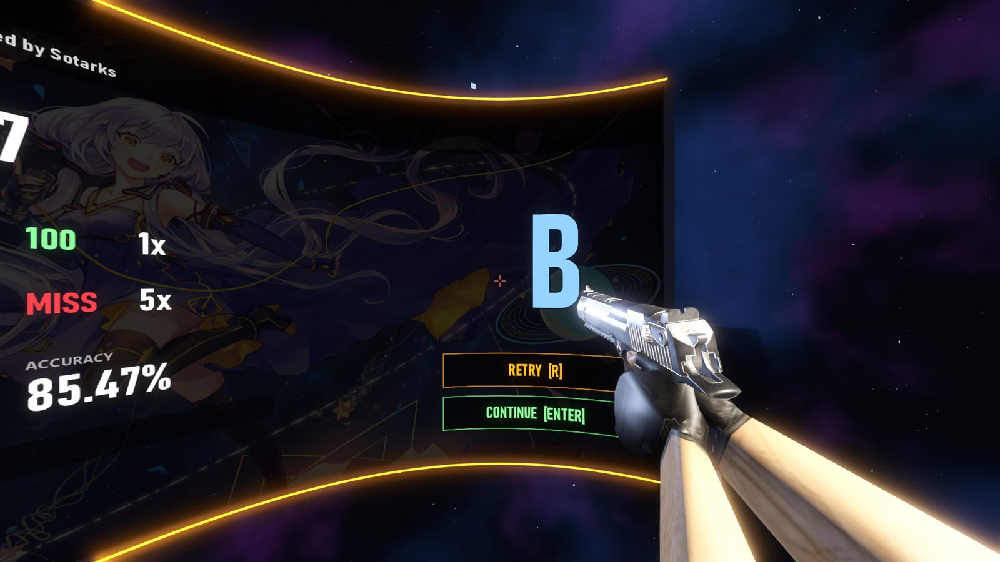
          <figcaption><b>Results</b><span>Grades from SS to D and your best score per map</span></figcaption>
        </figure>
      </div>

      <div class="failstrip" aria-label="What happens when you fail">
        <figure>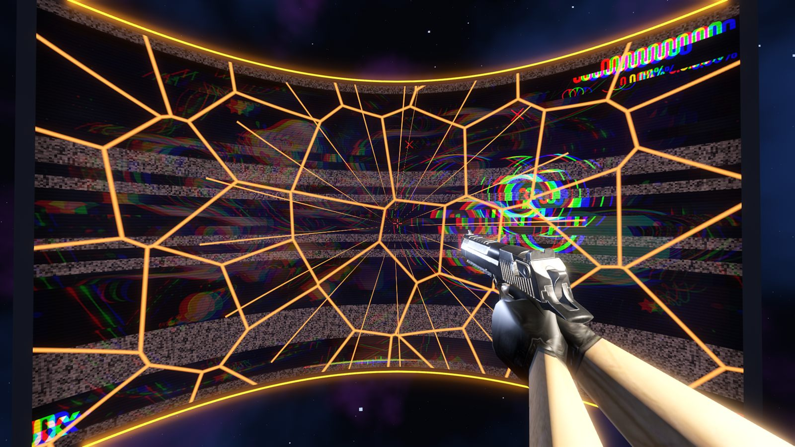<figcaption><b>0.5 s</b>Health hits zero, the screen cracks</figcaption></figure>
        <figure>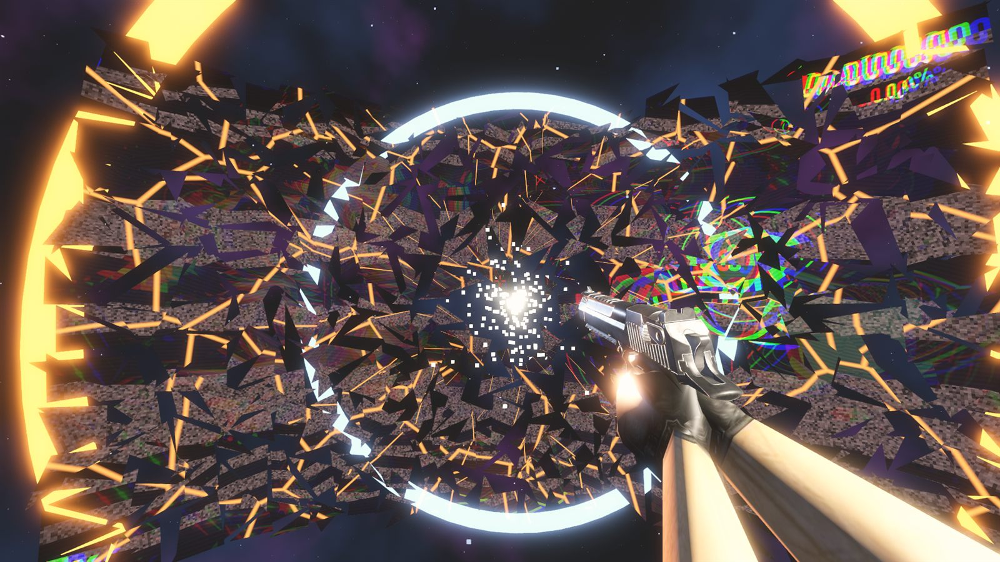<figcaption><b>1.0 s</b>It explodes, in slow motion</figcaption></figure>
        <figure>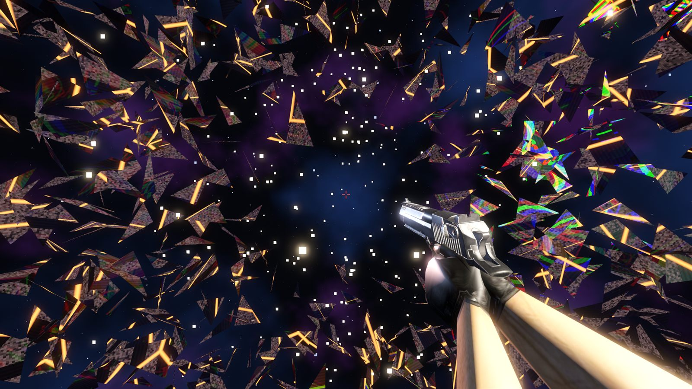<figcaption><b>1.6 s</b>Shards and sparks drift in space</figcaption></figure>
        <figure>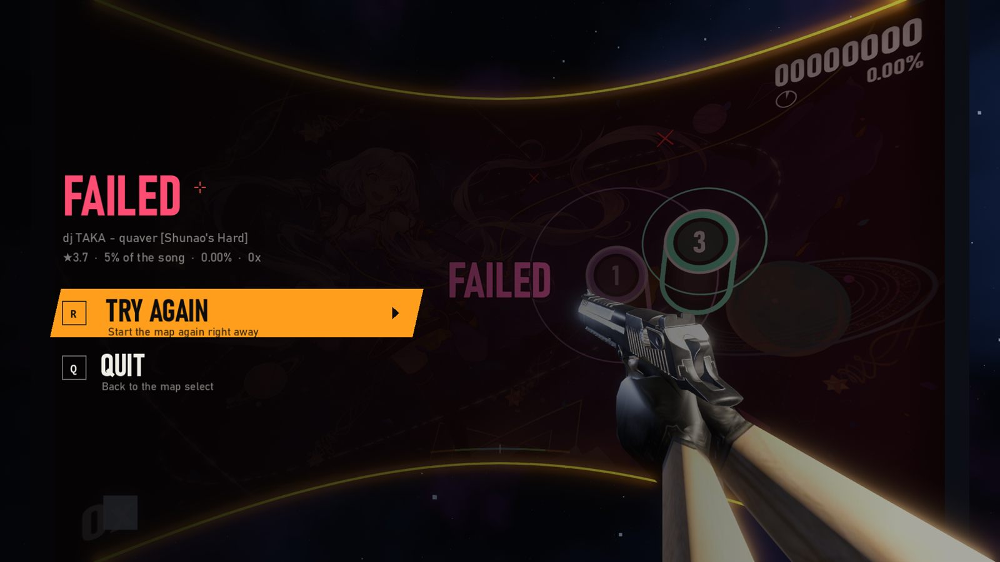<figcaption><b>3.4 s</b>It reassembles. R to try again</figcaption></figure>
      </div>
    </div>
  </section>

  <section class="block" id="features">
    <div class="wrap">
      <div class="section-head">
        <p class="kicker">What's inside</p>
        <h2>Real osu!, real CS feel</h2>
      </div>
      <div class="features">
        <div class="feature">
          <h3>A curved screen in space</h3>
          <p>The playfield wraps around you like a cinema screen. Set its distance from 1.5 to 8 metres: farther means smaller circles and harder flicks.</p>
        </div>
        <div class="feature">
          <h3>Full osu! gameplay</h3>
          <p>Hit circles, snaking sliders with reverse arrows, spinners, combo colours, HP drain and hit windows straight from each map's AR, OD, CS and HP.</p>
        </div>
        <div class="feature">
          <h3>CS settings you know</h3>
          <p>Sensitivity uses the CS formula (counts × sens × 0.022°) and shows your cm/360. Crosshair editor with colour, gap, outline and dot, plus viewmodel offsets.</p>
        </div>
        <div class="feature">
          <h3>osu! skins</h3>
          <p>Any .osk changes hit circles, sliders, numbers, the cursor, pause and fail screens, and can bring its own hitsounds.</p>
        </div>
        <div class="feature">
          <h3>Graphics your way</h3>
          <p>Presets from Low to Ultra, or go custom: AMD FSR 2.2, SMAA, MSAA up to 8×, render scale 50–200% and the osu! screen at up to 4K.</p>
        </div>
        <div class="feature">
          <h3>Discord status</h3>
          <p>Your friends see the song, difficulty, stars, mods and time left, or that you just failed at 87%.</p>
        </div>
        <div class="feature" style="grid-column: 1 / -1">
          <h3>All 11 mods</h3>
          <div class="mods">
            <span class="mod easy"><b>EZ</b>Easy</span>
            <span class="mod easy"><b>NF</b>No Fail</span>
            <span class="mod easy"><b>HT</b>Half Time</span>
            <span class="mod hard"><b>HR</b>Hard Rock</span>
            <span class="mod hard"><b>SD</b>Sudden Death</span>
            <span class="mod hard"><b>PF</b>Perfect</span>
            <span class="mod hard"><b>DT</b>Double Time</span>
            <span class="mod hard"><b>NC</b>Nightcore</span>
            <span class="mod hard"><b>HD</b>Hidden</span>
            <span class="mod hard"><b>FL</b>Flashlight</span>
            <span class="mod auto"><b>AU</b>Auto</span>
          </div>
        </div>
        <div class="spectrum-card">
          <h3>Difficulty you can read at a glance</h3>
          <p>Stars are coloured on one continuous spectrum, so a 4.2 and a 4.8 never look the same. The song list draws a 10-segment meter for each difficulty and a range chart for each song.</p>
          <div class="spec" aria-label="Star spectrum from 0 to 8 stars with tiers">
            <div class="spec-scale" aria-hidden="true"><span>0★</span><span>2★</span><span>4★</span><span>6★</span><span>8★</span></div>
            <div class="spec-bar"></div>
            <div class="spec-tiers">
              <div class="tier" style="left: 0%"><b style="color:#6f8fb3">EASY</b><span>0+</span></div>
              <div class="tier" style="left: 25%"><b style="color:#4fffd5">NORMAL</b><span>2.0+</span></div>
              <div class="tier" style="left: 33.75%"><b style="color:#a9f74f">HARD</b><span>2.7+</span></div>
              <div class="tier" style="left: 50%"><b style="color:#ff9f6a">INSANE</b><span>4.0+</span></div>
              <div class="tier" style="left: 66.25%"><b style="color:#d052a8">EXPERT</b><span>5.3+</span></div>
              <div class="tier" style="left: 81.25%"><b style="color:#8a86ff">EXPERT+</b><span>6.5+</span></div>
            </div>
          </div>
        </div>
      </div>
    </div>
  </section>

  <section class="block" id="weapons">
    <div class="wrap">
      <div class="section-head">
        <p class="kicker">Loadout</p>
        <h2>Pick your gun</h2>
        <p>Switch at any time, even mid-song, with <kbd class="k">1</kbd> <kbd class="k">2</kbd> <kbd class="k">3</kbd>, <kbd class="k">Q</kbd> for the last one or the mouse wheel. In a song every click is one shot, whatever the gun.</p>
      </div>
      <div class="weapons">
        <article class="weapon">
          <div class="pic"><span class="key">1</span></div>
          <div class="body">
            <h3>AK-47</h3>
            <dl><dt>Fire</dt><dd>Automatic in the lobby, 600 rounds/min</dd><dt>Feel</dt><dd>Classic CS rifle kick and bolt</dd></dl>
          </div>
        </article>
        <article class="weapon">
          <div class="pic">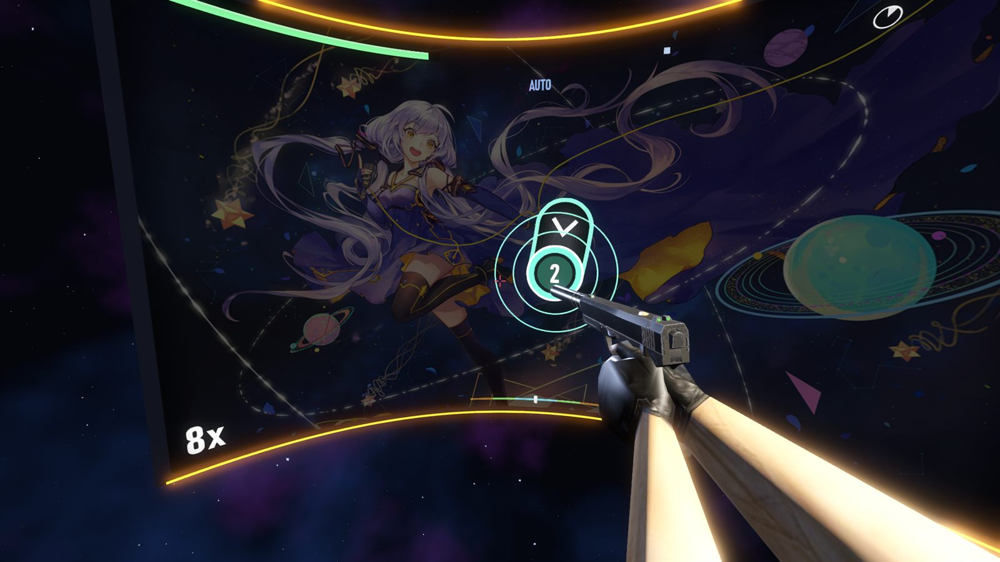<span class="key">2</span></div>
          <div class="body">
            <h3>USP-S</h3>
            <dl><dt>Fire</dt><dd>Semi-auto, suppressed</dd><dt>Feel</dt><dd>Quiet “tchk”, light recoil, tiny flash</dd></dl>
          </div>
        </article>
        <article class="weapon">
          <div class="pic"><span class="key">3</span></div>
          <div class="body">
            <h3>Desert Eagle</h3>
            <dl><dt>Fire</dt><dd>Semi-auto, heavy</dd><dt>Feel</dt><dd>Loud boom, big kick, slide snaps back</dd></dl>
          </div>
        </article>
      </div>
      <p class="note">Camera recoil and weapon volume both have their own options, and you can hide the gun entirely.</p>
    </div>
  </section>

  <section class="block" id="maps">
    <div class="wrap">
      <div class="section-head">
        <p class="kicker">Guide</p>
        <h2>How to install maps</h2>
        <p>os!strike plays osu!standard beatmaps. Fifteen songs come in the download; adding more takes about a minute.</p>
      </div>
      <div class="guide">
        <ol class="steps">
          <li>
            <div>
              <h3>Get a beatmap</h3>
              <ul>
                <li>Download an <code>.osz</code> from <a href="https://osu.ppy.sh/beatmapsets" target="_blank" rel="noopener">osu.ppy.sh/beatmapsets</a> (a free osu! account is needed).</li>
                <li>Already play osu! (stable)? Copy song folders from <span class="path">%LOCALAPPDATA%\osu!\Songs</span>.</li>
                <li>On osu!lazer, export the beatmap as <code>.osz</code>.</li>
              </ul>
            </div>
          </li>
          <li>
            <div>
              <h3>Drop it in the <code>maps</code> folder</h3>
              <p>It's the <code>maps</code> folder next to <code>os!strike.exe</code>. Put <code>.osz</code> files straight in it, not inside another folder. Song folders go in as they are.</p>
            </div>
          </li>
          <li>
            <div>
              <h3>Open the song select</h3>
              <p>The game extracts new <code>.osz</code> files on its own and reads every difficulty: stars, AR, OD, CS, HP, length and BPM. Your song is in the list.</p>
            </div>
          </li>
        </ol>
        <div class="side">
<pre class="tree" aria-label="Folder layout"><span class="d">os!strike/</span>
├─ <span class="x">os!strike.exe</span>
├─ <span class="d">maps/</span>            <span class="c">← beatmaps</span>
│  ├─ <span class="d">873811 dj TAKA - quaver/</span>
│  ├─ <span class="d">…14 more songs/</span>
│  └─ <span class="n">your-new-map.osz</span>   <span class="c">← drop here</span>
├─ <span class="d">skins/</span>           <span class="c">← osu! skins</span>
│  └─ <span class="n">your-skin.osk</span>
└─ <span class="d">sounds/</span>          <span class="c">← custom hitsounds</span></pre>
          <div class="callout"><b>Only osu!standard works.</b> Taiko, Catch and Mania difficulties are skipped. To re-read a map after editing it, delete the <code>.json</code> next to its <code>.osu</code> file.</div>
        </div>
      </div>
    </div>
  </section>

  <section class="block" id="skins">
    <div class="wrap">
      <div class="section-head">
        <p class="kicker">Guide</p>
        <h2>How to install skins</h2>
        <p>Any osu! skin works. The download includes the built-in os!strike look and the <em>dokidokilolixx</em> skin.</p>
      </div>
      <div class="guide">
        <div class="side">
          <div class="compare" id="compare" style="--split: 50%">
            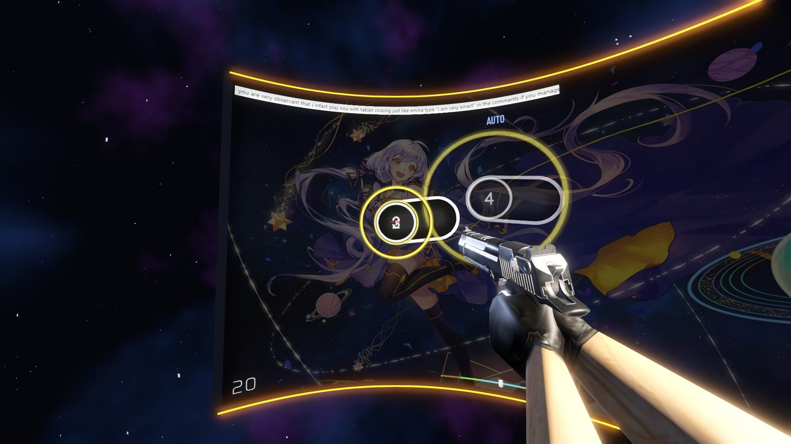
            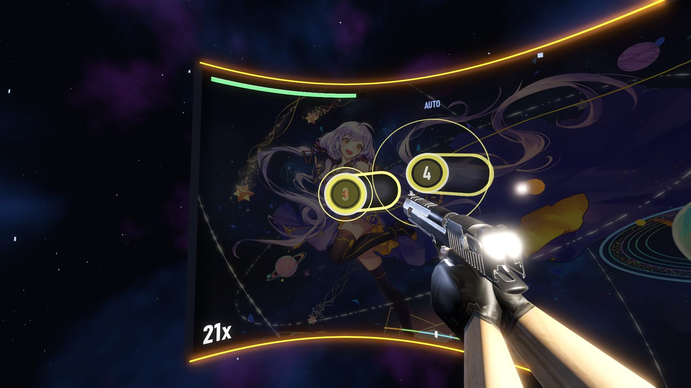
            <span class="divider" aria-hidden="true"></span>
            <span class="tag l">os!strike (default)</span>
            <span class="tag r">dokidokilolixx</span>
            <input type="range" id="compareRange" min="0" max="100" value="50" aria-label="Drag to compare the default skin with the dokidokilolixx skin">
          </div>
          <p class="stage-caption" style="text-align:left">Drag to compare: same song, same moment, two skins.</p>
        </div>
        <ol class="steps">
          <li>
            <div>
              <h3>Get a skin</h3>
              <p>Download an <code>.osk</code> file, for example from the skinning section of the <a href="https://osu.ppy.sh/community/forums" target="_blank" rel="noopener">osu! forums</a>. A skin folder from your osu! install works too.</p>
            </div>
          </li>
          <li>
            <div>
              <h3>Drop it in the <code>skins</code> folder</h3>
              <p>Put the <code>.osk</code> or the folder in <code>skins</code>, next to <code>os!strike.exe</code>. <code>.osk</code> files are extracted automatically.</p>
            </div>
          </li>
          <li>
            <div>
              <h3>Choose it</h3>
              <p>Press <kbd class="k">Tab</kbd> in the song select to cycle skins, or go to <b>Options → OSU! → SKIN</b>. Turn on <b>SKIN HITSOUNDS</b> to use its sounds.</p>
            </div>
          </li>
        </ol>
      </div>
      <div class="callout" style="margin-top: 26px"><b>Custom hitsounds:</b> put <code>.wav</code>, <code>.ogg</code> or <code>.mp3</code> files in <code>sounds</code>, then pick one in <b>Options → AUDIO → HITSOUND</b> (press REFRESH after adding files).</div>
    </div>
  </section>

  <section class="block" id="faq">
    <div class="wrap faq-wrap">
      <div>
        <div class="section-head">
          <p class="kicker">FAQ</p>
          <h2>Questions</h2>
        </div>
        <div class="faq">
          <details>
            <summary>Windows says “Windows protected your PC”</summary>
            <div><p>The game isn't signed with a paid certificate, so SmartScreen doesn't know it yet. Click <b>More info</b>, then <b>Run anyway</b>.</p></div>
          </details>
          <details>
            <summary>I opened the exe and there are no songs</summary>
            <div><p>Extract the whole zip first. <code>os!strike.exe</code> has to stay next to the <code>maps</code>, <code>skins</code> and <code>sounds</code> folders; opening it from inside the zip doesn't work.</p></div>
          </details>
          <details>
            <summary>The game runs slowly</summary>
            <div><p>Go to <b>Options → VIDEO → ADVANCED GRAPHICS</b> and pick the <b>Low</b> preset, or lower <b>RENDER SCALE</b> and set the upscaler to AMD FSR. <b>SHOW FPS</b> puts a small counter in the corner.</p></div>
          </details>
          <details>
            <summary>Where are my settings and scores saved?</summary>
            <div><p>In <span class="path">%APPDATA%\Godot\app_userdata\os!trike</span>. Delete that folder to reset everything.</p></div>
          </details>
          <details>
            <summary>Can I play Taiko, Catch or Mania maps?</summary>
            <div><p>No. os!strike plays osu!standard only; other modes are skipped when the maps are read.</p></div>
          </details>
          <details>
            <summary>How do I uninstall it?</summary>
            <div><p>Delete the <code>os!strike</code> folder, and the settings folder above if you want it gone completely.</p></div>
          </details>
        </div>
      </div>
    </div>
  </section>

  <section class="final" id="download">
    <div class="wrap">
      <div class="spectrum-rule" style="width: min(420px, 80%)"></div>
      <h2>Ready to aim?</h2>
      <p>Free download for Windows. Extract the zip, open <code>os!strike.exe</code>, shoot <b>PLAY</b>.</p>
      <a class="btn-dl" data-download href="#download">
        <svg class="dl-icon" aria-hidden="true"><use href="#i-dl"/></svg>
        <span><b>Download os!strike</b><small>os!strike-1.0-windows.zip · 196 MB</small></span>
      </a>
      <p class="pending" id="pendingNote" hidden>The download link is being set up. Check back soon.</p>
      <div class="hash"><span>SHA-256</span><code>e042eecb65a678c85002fc01c55d32251fcc1daab9df5c011460850a0edaabc5</code></div>
    </div>
  </section>
</main>

<footer>
  <div class="wrap">
    <p><b style="color: var(--dim)">os!strike</b> is a free fan project made with Godot 4.7. It is not affiliated with or endorsed by ppy Pty Ltd (osu!) or Valve (Counter-Strike). Included beatmaps, songs, skins and 3D models belong to their respective creators.</p>
    <p>v1.0 · Windows x64</p>
  </div>
</footer>

<script>
// Where the zip is hosted. Every download button uses this link.
const DOWNLOAD_URL = "";

(() => {
  const links = document.querySelectorAll("[data-download]");
  if (DOWNLOAD_URL) {
    links.forEach((a) => {
      a.href = DOWNLOAD_URL;
      a.target = "_blank";
      a.rel = "noopener";
    });
  } else {
    document.getElementById("pendingNote").hidden = false;
  }

  // Skin comparison slider.
  const compare = document.getElementById("compare");
  const range = document.getElementById("compareRange");
  range.addEventListener("input", () => compare.style.setProperty("--split", range.value + "%"));
})();

</script>
